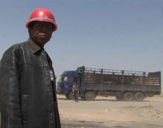

|
L'ARGENT DU CHARBON
COAL MONEY
Wang Bing | F 2008 | 53 Min.
Material : DV
Format: DigiBeta
Originalsprache: Mandarin
Drehbuch: Wang Bing
Kamera: Wang Bing
Ton: Delphine Dumont
Schnitt: Catherine Rascon
Produktion: Les Films d'Ici
Vertrieb: Les Films d'Ici
Zweiter Dokumentarfilmpreis der Jury, Documenta Madrid 2009
Deutsche Erstaufführung
COAL MONEY gibt einen prägnanten Einblick in die gegenwärtige Realität des "sozialistischen Kapitalismus", zeigt Aspekte seines Funktionierens auf der untersten ökonomischen Ebene. Die Lkw-Fahrer sind zugleich Händler, auf sich selbst gestellte, übermüdete Entrepreneure, die nach langen nächtlichen Fahrten auf staubigen Straßen in endlosen Preisverhandlungen landen. Das Kohlegeld zirkuliert durch alle Bilder dieses Films und es scheint, als komme es nie zu einem Stillstand, zu einem gesicherten Moment des Profits. COAL MONEY entwirft ein düsteres Bild der Privatisierung. Ein endloser Verteilungskonflikt, der Gewinner hat, die nicht ins Bild finden, Profiteure, die man nicht sieht. – Simon Rothöhler, CARGO
Wang Bing, geb. 1967 in Xi’an, China. Er studierte bis 1996 an der Filmakademie in Peking, daran anschließend drehte er die 18-teilige Fernsehserie "Campus Affairs" und die TV-Dokumentation "Common People’s Homestead" und war 1999 Kameramann bei dem Spielfilm "Distortion", bevor er mit seiner dreiteiligen Langzeitdokumentation "Tie Xi Qu/Tiexi District: West of the Tracks" 2003 auf internationalen Festivals für Aufsehen sorgte. Sein erster Spielfilm befindet sich in Postproduktion.
Filme (Auswahl): L'argent du charbon (Coal Money) 2008 | Cai you ri ji (Crude Oil) 2008 (UNDERDOX 04) | He Fengming (Fengming, a Chinese Memoir) 2007 (UNDERDOX 03) | Tie Xi Qu (Tiexi District: West of the Tracks) 2003
zurück
|